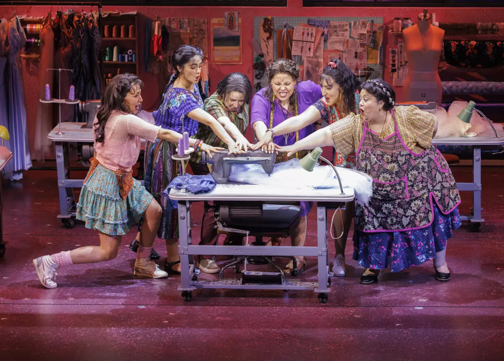

Metodología: Tres Fases, 18 Meses

De izquierda a derecha, Jennifer Sánchez, Aline Mayagoitia, Sandra Valls, Florencia Cuenca, Shelby Acosta y Carla Jiménez, durante un ensayo para la producción de Broadway de “Real Women Have Curves”.
Fase 1: Preparacion (Meses 1-3)
La fase inicial concentra el trabajo estratégico y de planificación que habilita todo el proyecto. Se mapean y seleccionan las creadoras participantes, se establecen las alianzas institucionales clave y se desarrollan los guiones con perspectiva de género que guiarán la producción audiovisual.
- A1. Mapeo y selección de creadoras — $8,000 MXN — Coordinador General, Gestor Institucional
- A2. Establecimiento de alianzas institucionales (UAM, UNAM, IMCINE, INMUJERES, CONAVIM) — $10,000 MXN — Coordinador General, Asesor Legal
- A3. Desarrollo de 8 guiones con perspectiva de género — $15,000 MXN — Productor Audiovisual, 2 Guionistas
Fase 2: Desarrollo (Meses 4-12)
El núcleo operativo del proyecto. Cuatro actividades corren en paralelo, lo que requiere la mayor concentración de recursos humanos y financieros. Esta fase produce los contenidos audiovisuales, lanza la plataforma digital, realiza las entrevistas a creadoras e implementa los espacios formativos.
- A4. Desarrollo de plataforma web con directorio interactivo — $105,000 MXN — Desarrollador Web, Diseñador UX/UI (M4–9)
- A5. Producción de 4 cortometrajes y 4 cápsulas audiovisuales — $420,000 MXN — director Audiovisual, Productor, Editor (M7–12)
- A6. Realización de 15 entrevistas en video a creadoras — $32,000 MXN — Redactor/Periodista, Camarógrafo (M4–8)
- A7. Implementación de 6 espacios formativos para 150+ personas — $58,000 MXN — Facilitadores de Género, Investigador Social (M5–12)
Fase 3: Concreción (Meses 13–18)
La fase final integra y proyecta el trabajo producido: las piezas audiovisuales llegan a las audiencias de los seis municipios, las creadoras son reconocidas públicamente en la exposición y el proyecto sistematiza sus aprendizajes para dejar un legado metodológico replicable.
- A8. Proyecciones públicas en 6 municipios prioritarios — $54,000 MXN — Coordinador General (M13–16)
- A9. Exposición de creadoras en espacio cultural del Edomex — $50,000 MXN — Curador/Museógrafo (M13–15)
- A10. Sistematización y documento de buenas prácticas — $20,000 MXN — Investigador Social, Redactor (M14–16)
- A11. Evaluación final e informe de impacto — $25,000 MXN — Coordinador General, Equipo completo (M16–18)
Hitos Clave del Cronograma
- Mes 3: 15 creadoras seleccionadas, 2 alianzas formalizadas
- Mes 6: 8 guiones aprobados, red de 30 creadoras conformada, 2 espacios formativos realizados
- Mes 9: Plataforma web lanzada, 15 entrevistas completadas
- Mes 12: 6 espacios formativos completados, exposición inaugurada, 10,000 personas en redes
- Mes 15: 8 piezas audiovisuales producidas, 4 proyecciones realizadas
- Mes 18: Proyecto completado, evaluación final, informe presentado a financiadores